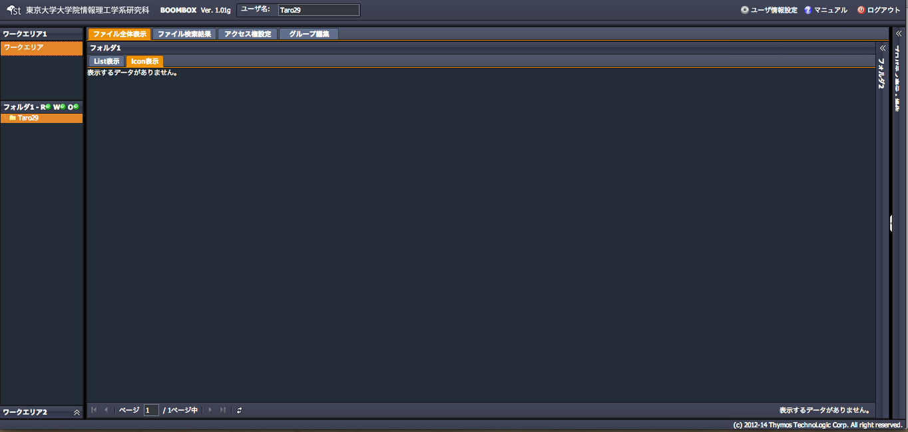

SecretFilesマニュアル
4.SecretFilesサービス(操作編)
ログインに成功すると、画面が切り替わり、本サービスがスタートします。
アクティベーションプロセスにより、ユーザ毎に、ユーザ名と同じ名前の“ホームフォルダ”が自動的に作られます。初期ログインでは、このホームフォルダが１つだけ存在する構成からスタートします。

SecretFilesでは、このホームフォルダにファイルを追加、フォルダを作成して、ファイルを管理、保管します。また、共有フォルダにより、組織やグループ単位でファイルを共有することができます。